Puedes entrar en este santuario desde que llegas a la región de la torre del bosque, pero tendrás que superar una Prueba heroica para poder entrar. La prueba consiste en superar una zona sin perder o cambiar tu armamento de madera y se llama "La prueba de fuego". Para activarla tienes que hablar con Gingo junto al Gran Árbol Deku para activar las pruebas kolog.
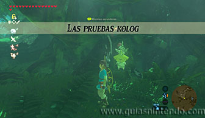
Después ve por el camino del este, es el camino que está justo al lado de Obab. Ten en cuenta que para avanzar por el Bosque Kolog solo puedes seguir los caminos predeterminados (por donde hay menos niebla o senderos iluminados), si intentas ir por otro camino te envolverá la niebla y regresarás al último punto válido en el que estuviste. Siguiendo el camino del este encontrarás a Romell y activará la prueba heroica.
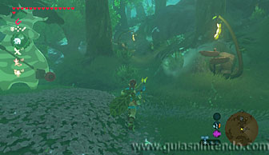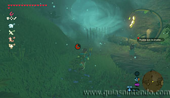
Antes de comenzar tendrás que dejar un hueco libre en tu inventario, tanto en escudos como en armas, para poder equipar la espada y escudo de madera que debes utilizar en la prueba. Después, no podrás ni cambiar de armas ni perderlos (si se queman o desgastan). Lo mejor es que te enfrentes a los enemigos usando bombas y así no gastarás la espada. También te servirán para abrir el camino cortado por cajas sin perder ningún tipo de munición.
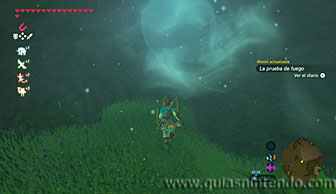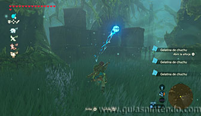
Más adelante vas a encontrar un lago, antes de entrar en él debes destruir a los enemigos o te harán imposible avanzar. Usa flechas para acabar con ellos desde lejos. Después podrás usar el módulo imán para crear bloques que te permitan pasar sobre el lago de aguas movedizas (si las pisas no podrás salir).
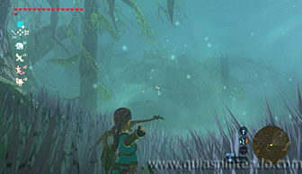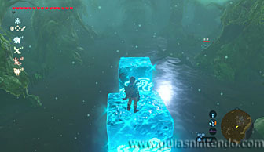
Cada vez que veas un enemigo a lo lejos, párate y usa el arco para acabar con él sin acercarte. Después sigue creando el camino con bloques en línea recta y llegarás al santuario.
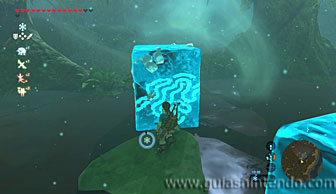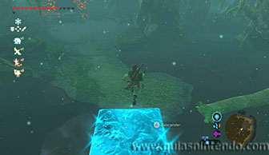
Avanza para abrir el cofre y conseguir un gran núcleo ancestral. Cuando llegues al altar del santuario examínalo para obtener un símbolo de valía.
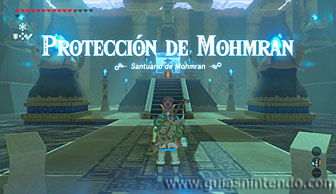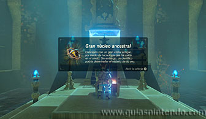